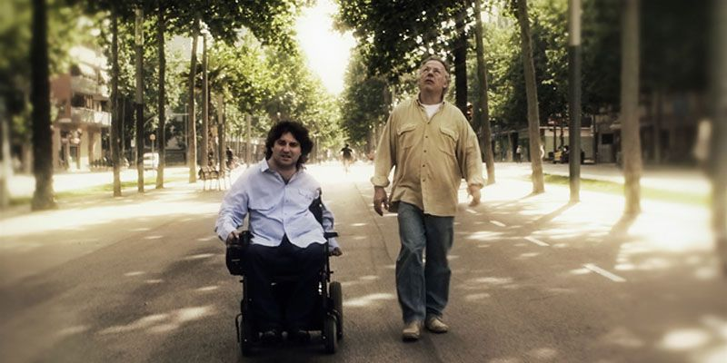
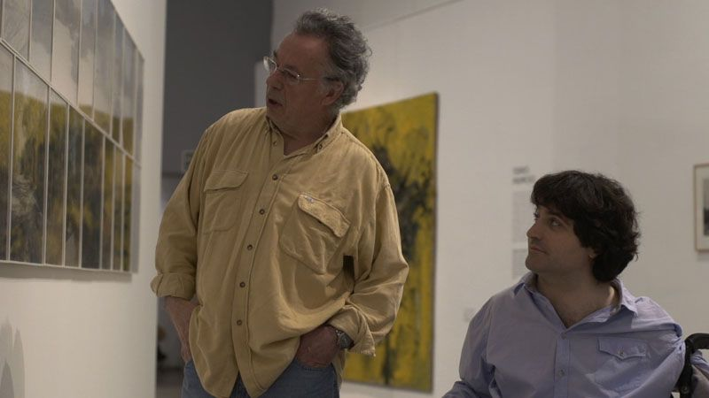

Bizitzea eta beste fikzio batzuk
Pelikulak bi pertsonaia nagusi ditu ardatz: Antonio, aniztasun funtzionala duten pertsonen eskubideen aldeko aktibista tetraplegikoa, eta Pepe, adineko gizona, borroka sozial eta pertsonalez beteriko bizitza baten ondoren flamenko-kantari gisa karrera hastea erabakitzen duena. Historiak sexualitatea, desgaitasuna eta autonomiaren aldeko borroka bezalako gaiak aztertzen ditu, dibertsitate funtzionala duten pertsonak etengabe infantilizatzen edo mugatzen dituen ingurune batean. Eguneroko egoeren eta bi pertsonaien arteko topaketaren bidez, filmak haien barne eta kanpo borrokak islatzen ditu, duintasun eta autonomia zentzua bilatzen duten bitartean.

Zer adierazi nahi du pelikulak?
Pelikulak fikzioa eta dokumentala nahasten ditu gutxi jorratutako gizarte-problematikak ikusarazteko, hala nola desgaitasuna duten pertsonen sexualitatea edo dibertsitate funtzionala duten gizabanakoak etengabe gehiegi babesten saiatzen den ingurunean dauden autonomia-zailtasunak.
Maskulinitatearen eraikuntzaz, porrot pertsonal eta sozialaz eta izateko eta besteekin harremanak izateko moduak berrasmatzeko beharraz ere hausnartzen du Pelikulak.
Pertsonaien deskribapena
Antonio Aniztasun funtzionala duten pertsonen eskubideak ikusarazteko eta aitortzeko borrokatzen duen protagonista da. Bere bizitza bere autonomia eskatzean datza, batez ere sexualitateari dagokionez, askotan bere egoera fisikoagatik ukatzen baitzaio. Antonio gogoetatsua da, erresistentea, eta etengabe desafiatzen ditu desgaitasuna duen pertsona izateak zer esan nahi duen.
Pepe adineko gizona da, aktibismoak eta arau sozialekin bat ez etortzeak markatutako bizitza izan arren, flandestarrarengan adierazpide berri bat aurkitzen duena. Pepek aitaren rolean porrot egin izanaren sentimenduari aurre egiten dio, eta uko egiten dion normaltasun sozial batean sartzeko presioari. Bere izaera malenkoniatsu baina borrokalariak aurrera jarraitzeko nahiaren eta porrotean harrapatuta egotearen sentipenaren arteko tentsioak islatzen ditu.
Errealitate desberdinak

Pelikulak desgaitasunaren, sexualitatearen, maskulinitatearen eta autonomiaren inguruko errealitateak azaltzen ditu. Alde batetik, Antoniok haur bihurtzen duen eta, aldi berean, bizitza sexual aktibotik kanpo uzten duen gizarte baten zapalketari egin behar dio aurre.
Bestalde, Pepek gizarte-bazterketako beste modu bat islatzen du, adineko gizonarena, bere bizitzari zentzu berri bat aurkitzen laguntzen duena. Bi pertsonaiak ulertzen ez dituen eta erabat onartzen ez dituen gizarte baten bazterrean bizi dira. Dibertsitate funtzionalaren testuinguruan, oztopoak ez dira fisikoak soilik, baita sozialak eta emozionalak ere.
Gizarte-integrazioa behar dugu?
Desgaitasuna duten pertsonen gizarteratzea gai fisiko edo arkitektonikoetatik haratago nola doan hausnartzera gonbidatzen du pelikulak. Antonioren eta Peperen borrokak agerian uzten du benetako integrazioa posible dela soilik autonomia indibidualak errespetatzen direnean eta aniztasun funtzionala duten pertsonak haurtzaroan edo patologian jartzen dituzten estereotipo paternalistak suntsitzen direnean. Sexualitatea integrazio horren funtsezko alderdia da; izan ere, izaki sexual eta autonomo gisa aitortua izateko nahia Antonioren aldarrikapen indartsuenetako bat da.
Gainera, pelikulak azpimarratzen du aniztasuna onartu behar dela maskulinotasuna eraikitzeko moduan. Maskulinitatearen itxaropen tradizionalak betetzen saiatzean pertsonaiek porrot egiten dutelako ideia eredu hegemonikoaren kritika bat da, norberaren gorputzaren eta gainerakoen gaineko arrakasta, kontrola eta subiranotasuna eskatzen dituena. Bi pertsonaiak maskulinitate-forma berrien bila ari dira, eta horiek ez daude arrakasta sexualaren edo profesionalaren rol tradizionalen mende, harreman sakonagoen eta gizatiarragoen mende baizik.

Laburbilduz, pelikulak planteatzen du benetako gizarte-integrazioak gizateriaren dimentsio guztiak aitortzea eskatzen duela, sexualitatea barne, baita pertsonei bizitza osoa eta autonomoa izateko eskubidea ukatzen dieten eredu mugatzaileekiko haustura ere.